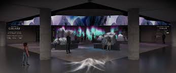
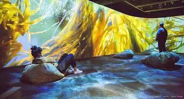

Immersive environments:
This is an important theme in its own right .For years,we defined immersion in such a wide range:from reading a good book to full embodied stimulations like those that are used for space flight training.The range of immersion extended to online gaming as well ,such as the use of second life,where users are 'immersed' in an online virtual environment.However,as smart spaces continue to expandand and improve,immersivity has become a part of it.Perhaps it will re-emerge as a theme of its own,but above is a link to that theme .

Effecting functionality:
It allows the environment ot produce effects that alter the conditions of space. The physical conditions or services the space offers to the users may produce these effects .For example a visitor to an ontario bussiness park who was carrrying a web enabled cell phone could send a text message offering to download a small java client that would enable smart interaction with other interactors with technology elemants through out the space.specifically,it has been advancement in aour daliy lives .

Evalvations
Upon smart space literature review we discover smart space defination that were not absolutes and thus we had to be prepared to discuss this limitation.Smart spaces to professions was reformated to encourage completion in a timely manner.When biometrics are used instead of mobile devices that the user volentery caries ,then we can run into issues with privacy and with false positives.more time in stimulation labwith more interactive and immersive experiences

Ideas for the future:
smart spaces should takle the issues of public transportation such as public transport can be distributed and not dependent on one service provider.Smart space technology can also be used incresingly to help people manage the use of natural resources such as water,electricity etc.....on a macro and a microscale.Smart spaces could also have a level of artificial intelligence to learn and improve based on what is learned.For example, if someone ages in the same smart home,components of the home will adjust as the occupant ages and changes their behaviou(e.g. changing humidity,temperature,or levels of fresh air injected in a bedroom to minimize the frequency of waking as a person ages).

Goals and Approaches
Bringing a smart space into the classroom is no easy feat,however the concept of smart spaces can be represented through the engaging activities that could involve:capturing the essence of a smart space by having the class engage in practises that help to contribute to a body of knowledge.The classroom manages the students using a 'wizard of oz'type cenerio where people act as censors or extensions of space.bringing in tools that enable and create smart spaces (nintendo wii is a simple example)
It is used in a wide variety of enterprise applications, assisting in or performing automated decision-making. Some of the companies that provide this are Advanced Systems Concepts, Informatica, Maana, Pegasystems, UiPath.